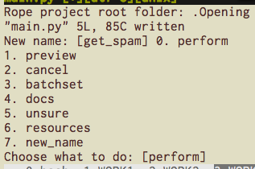

リファクタリングツールあれこれ¶
リファクタリングツールあれこれ
〜 May the force be with you 〜
PyCon JP 2014.資料
誰だお前は

- 名前: tell-k
- 所属: beproud.inc
- Twitter: @tell_k
- Github: https://github.com/tell-k
- 特茶が大好き
動機
- 普段からpythonを書いてる
- コードを書く時に気をつけてる事がある
- その時に使ってるツールが結構ある
- 一度まとめてみたかった
リファクタリングの話はしない。
これからもするつもりはない。
いいね？
対象者
- プログラム初心者
- Python入門したて
- 楽にコード書きたい
- 先輩の細かいコードレビューに嫌気がさしてきた
当該発表者
- 中途半端なVimmer
- 他のエディタ事情に疎い
我が世には
Vim以外存在しない
目次
- コーディングスタイルを知る
- 自動整形に任せる
- 自動補完で楽する
- リファクタリングツールを使う
- コードメトリクスを見る
- デッドコードを探す
- まとめ
1. コーディングスタイルを知る
- PEP8 – Style Guide for Python Code
- PEP257 – Docstring Conventions
- Pythonコミュニティが推奨するスタイルが存在する
PEP 8 -- Style Guide for Python Code
- インデントはスペース4
- 行の長さ最大79文字
- import分の順序
- 命名スタイル
- etc ..
PEP 257 -- Docstring Conventions
ツールでチェック
- pep8 … pepe8のチェック
- pep257 … pep257のチェック
- pyflakes … 文法エラーなどをチェック
- flake8 … pep8 + pyflakes
pep8
- PEPの名前そのままのライブラリ
- PEP8として準拠してくれるかチェックしてくれる
- https://pypi.python.org/pypi/pep8
- 例えばこんなコード
import math, sys;
def example1():
####This is a long comment. This should be wrapped to fit within 72 characters.
some_tuple=( 1,2, 3,'a' );
some_variable={'long':'Long code lines should be wrapped within 79 characters.',
'other':[math.pi, 100,200,300,9876543210,'This is a long string that goes on'],
'more':{'inner':'This whole logical line should be wrapped.',some_tuple:[1,
20,300,40000,500000000,60000000000000000]}}
return (some_tuple, some_variable)
def example2(): return {'has_key() is deprecated':True}.has_key({'f':2}.has_key(''));
class Example3( object ):
def __init__ ( self, bar ):
#Comments should have a space after the hash.
if bar : bar+=1; bar=bar* bar ; return bar
else:
some_string = """
Indentation in multiline strings should not be touched.
Only actual code should be reindented.
"""
return (sys.path, some_string)
- 警告メッセージが表示
(pyconjp2014)$ pep8 example1.py
example1.py:1:12: E401 multiple imports on one line
example1.py:1:17: E703 statement ends with a semicolon
example1.py:3:1: E302 expected 2 blank lines, found 1
example1.py:4:5: E265 block comment should start with '# '
example1.py:4:80: E501 line too long (83 > 79 characters)
example1.py:5:15: E225 missing whitespace around operator
example1.py:5:17: E201 whitespace after '('
example1.py:5:21: E231 missing whitespace after ','
example1.py:5:26: E231 missing whitespace after ','
example1.py:5:31: E202 whitespace before ')'
example1.py:5:33: E703 statement ends with a semicolon
example1.py:6:18: E225 missing whitespace around operator
example1.py:6:26: E231 missing whitespace after ':'
example1.py:6:80: E501 line too long (84 > 79 characters)
example1.py:7:5: E128 continuation line under-indented for visual indent
pep257
- これもPEP名そのまま
- PEP257として準拠してくれるかチェックしてくれる
- https://pypi.python.org/pypi/pep257
""" Here are some examples.
This module docstring should be dedented."""
def launch_rocket():
"""Launch
the
rocket. Go colonize space."""
def factorial(x):
'''
Return x factorial.
This uses math.factorial.
'''
import math
return math.factorial(x)
def print_factorial(x):
"""Print x factorial"""
print(factorial(x))
def main():
"""Main
function"""
print_factorial(5)
if factorial(10):
launch_rocket()
(pyconjp2014) $ pep257 example2.py
example2.py:1 at module level:
D209: Put multi-line docstring closing quotes on separate line
example2.py:1 at module level:
D208: Docstring is over-indented
example2.py:5 in public function `launch_rocket`:
D209: Put multi-line docstring closing quotes on separate line
example2.py:5 in public function `launch_rocket`:
D400: First line should end with '.', not 'h'
example2.py:5 in public function `launch_rocket`:
D205: Blank line missing between one-line summary and description
example2.py:5 in public function `launch_rocket`:
D207: Docstring is under-indented
example2.py:11 in public function `factorial`:
D300: Expected """-quotes, got '''-quotes
example2.py:23 in public function `print_factorial`:
D400: First line should end with '.', not 'l'
example2.py:28 in public function `main`:
D209: Put multi-line docstring closing quotes on separate line
example2.py:28 in public function `main`:
D400: First line should end with '.', not 'n'
example2.py:28 in public function `main`:
D205: Blank line missing between one-line summary and description
pyflakes
- 文法エラー/未定義の変数・関数の使用等をチェック
- コーディングスタイルのチェックではない
- https://pypi.python.org/pypi/pyflakes
import math
import re
import os
import random
import multiprocessing
import grp, pwd, platform
import subprocess, sys
def foo():
from abc import ABCMeta, WeakSet
try:
import multiprocessing
print(multiprocessing.cpu_count())
except ImportError as exception:
print(sys.version)
return math.pi
example3.py:2: 're' imported but unused
example3.py:3: 'os' imported but unused
example3.py:4: 'random' imported but unused
example3.py:5: 'multiprocessing' imported but unused
example3.py:6: 'grp' imported but unused
example3.py:6: 'platform' imported but unused
example3.py:6: 'pwd' imported but unused
example3.py:7: 'subprocess' imported but unused
example3.py:11: 'ABCMeta' imported but unused
example3.py:11: 'WeakSet' imported but unused
example3.py:13: redefinition of unused 'multiprocessing' from line 5
example3.py:15: local variable 'exception' is assigned to but never used
全ての警告に対処すれば...
- スタイルに準拠しつつ無駄な記述を排除できる。
- ３つのツールをバラバラに使うのは。。
ぶっちゃけ面倒
いままで紹介したツールは一旦全て忘れてください
flake8
- pep8 + pyflakes
- これ一つで大概のチェックが可能
- 拡張機能あり
- 循環的複雑度とか指定可能
- https://pypi.python.org/pypi/flake8
某社レビューガイドラインのファーストステップ
{kind=link}
訳) 最低flake8に通してからレビューに出そうや。な?
はい
flake8のメッセージ体系
- E***/W*** pep8 のメッセージ
- F***: pyflakes のメッセージ
- C9**: McCabe complexity pluginのメッセージ
- N8**: pep8-naming plugin のメッセージ
- http://flake8.readthedocs.org/en/latest/warnings.html
{kind=link}
flake8のTips
- setup.cfgでカスタマイズ
- どうしても無視したいヤツがいる
- VCS Hookを使う
- 拡張を使う
setup.cfgでカスタマイズ
- チェック内容をカスタマイズ
- 1行の最大長を120にしたい
- 特定の個所だけチェック除外したい
- プロジェクトのルートにsetup.cfgを用意
[flake8]
max-line-length = 120
exclude = /apps/*/migrations/*
どうしても無視したい
- やむ得ない事情で無視したい
- Djangoのsettingsのアスタリスクインポート
from settings.base import * # NOQA
- # NOQAとコメントを書けばいい
- やむ得ない場合ですよ。やむ得ない。
VCS Hookを使う
.hgがあるディレクトリで以下のコマンドを叩く
$ flake8 --install-hook
.hg/hgrcに勝手に追記してくれる
[hooks]
commit = python:flake8.hooks.hg_hook
qrefresh = python:flake8.hooks.hg_hook
[flake8]
complexity = 10
strict = False
ignore = None
lazy = False
拡張を使う
- pep257のチェックにも対応させたい
- flake8-docstringという拡張を使う
- https://pypi.python.org/pypi/flake8-docstrings/0.1.0
$ pip install flake8_docstrings
やる事はこれだけ
$ flake8 example3.py
example3.py:1:1: D100 Docstring missing
example3.py:2:1: F401 're' imported but unused
example3.py:3:1: F401 'os' imported but unused
example3.py:4:1: F401 'random' imported but unused
example3.py:5:1: F401 'multiprocessing' imported but unused
example3.py:6:1: F401 'grp' imported but unused
example3.py:6:1: F401 'platform' imported but unused
example3.py:6:1: F401 'pwd' imported but unused
example3.py:6:11: E401 multiple imports on one line
example3.py:7:1: F401 'subprocess' imported but unused
example3.py:7:18: E401 multiple imports on one line
example3.py:10:1: D103 Docstring missing
Dで始まるメッセージが表示されるようになる。
他には?
- pep8-naming -> クラス・変数などの命名規則のチェック
- flake8-todo -> # TODO を拾ってくれる
コーディングスタイルについて
- コミュニティ推奨のスタイルが存在する
- とりあえず始めるにはflake8がおすすめ
2. 自動整形に任せる
- チェックツールは沢山ある
- ただし直すのは
THE 人の手
辛い
- golangにはgofmtていう便利なツールがあってだな。
Pythonでもあるよ
- autopep8
- autoflake
- その他
autopep8
- pep8に従って整形してくれる
- gofmtのような存在
- これだけでも大分楽になる
- https://pypi.python.org/pypi/autopep8
Before
import math, sys;
def example1():
####This is a long comment. This should be wrapped to fit within 72 characters.
some_tuple=( 1,2, 3,'a' );
some_variable={'long':'Long code lines should be wrapped within 79 characters.',
'other':[math.pi, 100,200,300,9876543210,'This is a long string that goes on'],
'more':{'inner':'This whole logical line should be wrapped.',some_tuple:[1,
20,300,40000,500000000,60000000000000000]}}
return (some_tuple, some_variable)
def example2(): return {'has_key() is deprecated':True}.has_key({'f':2}.has_key(''));
class Example3( object ):
def __init__ ( self, bar ):
#Comments should have a space after the hash.
if bar : bar+=1; bar=bar* bar ; return bar
else:
some_string = """
Indentation in multiline strings should not be touched.
Only actual code should be reindented.
"""
return (sys.path, some_string)
コマンド
$ autopep8 --in-place --aggressive --aggressive exmaple1.py
After
import math
import sys
def example1():
# This is a long comment. This should be wrapped to fit within 72
# characters.
some_tuple = (1, 2, 3, 'a')
some_variable = {
'long': 'Long code lines should be wrapped within 79 characters.',
'other': [
math.pi,
100,
200,
300,
9876543210,
'This is a long string that goes on'],
'more': {
'inner': 'This whole logical line should be wrapped.',
some_tuple: [
1,
20,
300,
40000,
500000000,
60000000000000000]}}
return (some_tuple, some_variable)
def example2():
return ('' in {'f': 2}) in {'has_key() is deprecated': True}
class Example3(object):
def __init__(self, bar):
# Comments should have a space after the hash.
if bar:
bar += 1
bar = bar * bar
return bar
else:
some_string = """
Indentation in multiline strings should not be touched.
Only actual code should be reindented.
"""
return (sys.path, some_string)
tips
- 特定のディレクトリ以下を一発置換
- –aggresiveを重ねるとアグレッシブになる
autoflake
- pyflakesが出すようなメッセージに対応
- 利用されてないimport文の削除
- 利用されてない変数の削除
- https://pypi.python.org/pypi/autoflake
Before
import math
import re
import os
import random
import multiprocessing
import grp, pwd, platform
import subprocess, sys
hoge = "hoge"
def foo():
from abc import ABCMeta, WeakSet
fuga = "fuga"
try:
import multiprocessing
print(multiprocessing.cpu_count())
except ImportError as exception:
print(sys.version)
return math.pi
コマンド
$ autoflake --in-place --remove-unused-variables example3-autoflake.py
After
import math
import sys
hoge = "hoge" # <= モジュールスコープの変数は消さないでくれる
def foo():
try:
import multiprocessing
print(multiprocessing.cpu_count())
except ImportError:
print(sys.version)
return math.pi
その他
- docformatter … pep257に併せてdocstringを整形
- eradicate … 不要なコメントアウトを消す
- unify … シングルクォーテーションに統一
- pyformat … autopep8, autoflake, docformatter, unify 統合
- 細かな設定ができなさそう
自動整形について
- スタイルに合わせる時間を軽減できる
- 一括整形とかやると割とスキッとする
- 他人のコードに寛容になれる
- ただしツールを過信しすぎない
- PEP8とかPEP257とか凄い忘れる
3. 自動補完で楽する
- コード書いてる時にやっぱり欲しい
- 昔は python-complete 今は jedi
- virtualenvにも対応しているの地味に嬉しい
- https://pypi.python.org/pypi/jedi
- https://github.com/davidhalter/jedi-vim
ドット区切りで補完
- ドット区切りの時に候補の表示
- 精度がいい
- OFFにすることも可能
関数ヒントの表示
関数の括弧にきたら勝手にでる
Docstringの表示
- 対象にカーソルをおいて、「Shift + K」
定義場所のjump
- 対象にカーソルをおいて、「<leader> + d」
- vimのTabで勝手に開く
その他には？
- <leader> + d 対象のリネーム
- <leader> + n 利用場所の一覧を別ウィンドウに表示
- <leader> + g 変数等の初期化場所にjump?
- 若干じゃじゃ馬になる時があって旨く使いこなせてない
自動補完について
- コードを書く手間が省ける
- コードリーディングが捗る
4. リファクタリングツールを使う
- Ropeというツールを利用する
- 出来る事が若干jediと被る
- 定義位置へのjump
- リネーム
- リファクタリング作業に特化してる
- https://pypi.python.org/pypi/rope
- https://github.com/python-rope
- http://methane.hatenablog.jp/entry/2013/01/11/ropevimをインストールしてみる
最初にやる事
- ropeprojectを作る
- Vimを開いて「:RopeProjectConfig」と打つ
- Ropeプロジェクトを作成するか聞かれる
{kind=link}
設定ファイル
.ropeproject/config.py
設定ファイル
- .ropeproject/config.py が設定ファイルにパスを通す
# プロジェクトのソースのパスを指定する
# 'src/my_source_folder' for instance.
prefs.add('source_folders', 'django_apps')
# Virtualenvにパスを通す
# You can extend python path for looking up modules
prefs.add('python_path', '/Users/hoge/.virtualenvs/pyconjp2014/lib/python2.7/site-packages')
プロジェクトのロード
- Vimを開いて「:RopeAnalyzeModules」とタイプ
- 対処ソース情報とかを.ropeproject/objectdbに蓄えてくれる
- 動作が変とか思ったらとりあえず一回やっとく
使ってみる
- RopeRename …. 変数/関数/クラスをリネーム
- RopeMove …. 変数/関数/クラス等の移動
- RopeAutoImport …. import文の自動追記
- RopeFindImplementations …. 実装の検索
- RopeChangeSignature …. 関数の引数をその場で変更
- RopeExtractMethod …. メソッドの抽出
- RopeUndo/Redo … 取り消し/やり直し
RopeRename
- プロジェクト全体の変数/関数/クラスなどをリネーム
spam.py
def get_spam(num=1):
return "spam x {}".format(num)
main.py
from spam import get_spam
print get_spam() # => "spam x 1"
main.py の「get_spam()」にカーソルを置いて「:RopeRename」
新しい名前を聞かれる
{kind=link}
1を入力してプレビューを確認する。
{kind=link}
{kind=link}
- diffを表示して事前に確認する事ができる
RopeMove
- プロジェクト全体の変数/関数/クラスなど移動
spam.py
def get_spam(num=1):
return "spam x {}".format(num)
main.py
from spam import get_spam
print get_spam() # => "spam x 1"
- spam.pyのget_spamをmain.py移動
{kind=link}
丸っと移動される。不要なimportも削除
{kind=link}
RopeAutoImport
- インポート文を自動で追記してくれる
spam.py
def get_spam(num=1):
return "spam x {}".format(num)
main.py
print get_spam() # => "spam x 1"
- import文が書いてない
- get_spam()にカーソルを置いて「:RopeAutoImport」
{kind=link}
RopeFindImplementations
- 継承先の実装個所を探してくれる
spam.py
# BaseSpamという抽象クラスを用意
from abc import ABCMeta
class BaseSpam:
__metaclass__ = ABCMeta
@abstractmethod
def get_spam(self):
""" must implement. """
main.py
from spam import BaseSpam
class MySpam(BaseSpam):
def get_spam(self, num=1):
return "my spam x {}".format(num)
class YourSpam(BaseSpam):
def get_spam(self, num=1):
return "your spam x {}".format(num)
- BaseSpamのget_spamが実装してある個所を探したい
- BaseSpamのget_spamにカーソルを置いて「:RopeFindImplementations」
{kind=link}
- 実装してある個所を見つけてくれる
RopeChangeSignature
- 例えば関数の引数を急に変えたくなった時に使う
- get_spamにpriceを追加したい
spam.py
def get_spam(num=1):
return "spam x {}".format(num)
main.py
from spam import get_spam
print get_spam() # => "spam x 1"
- get_spamにカーソルを置いて「:RopeChangeSignature」
{kind=link}
引数にpriceを追加
{kind=link}
- 他の呼び出しに影響が無いように配慮してくれる
RopeExtractMethod
- 選択範囲をよしなにメソッド化
- 以下のif文を丸っとメソッドにする
# 〜 省略 〜
class Customer(object):
def statement(self):
total_amount = 0
frequent_renter_points = 0
rentals = self._rentals
result = "Rental Record for {name}\n".format(name=self.name)
for each in rentals:
this_amount = 0
# ここのif文全体を丸っとメソッドにする
if each.movie.price_code == Movie.REGULAR:
this_amount += 2
if each.days_rented > 2:
this_amount += (each.days_rented - 2) * 1.5
elif each.movie.price_code == Movie.NEW_RELEASE:
this_amount += each.days_rented * 3
elif each.movie.price_code == Movie.CHILDRENS:
this_amount += 1.5
if each.days_rented > 3:
this_amount += (each.days_rented - 3) * 1.5
# 〜 省略 〜
{kind=link}
- 抽出したい範囲を選択 -> RopeExtractMethodを実行
- メソッド名は「_amount_for」
{kind=link}
- if文を削除し一つのメソッド呼び出しになった
{kind=link}
- 文脈を呼んで、引数をよしなにしてくれるのが嬉しい
RopeUndo/RopeRedo
- Ropeでの変更内容は履歴として保存
- .ropeproject/history
- 直前の操作を取り消し or やり直し可能
- 大量ファイルのRenameに失敗しても安心
RopeUndo
{kind=link}
RopeRedo
{kind=link}
ショートカット
Ropeについて
- IDEに見劣りしない編集作業が可能になる。
- 事前に変更内容をプレビューは良い
- 慣れるまで多少時間が掛かった
- 使い慣れてるエディタで作業できるのは嬉しい
- こいつもじゃじゃ馬になることがある。
5. コードメトリクスを見る
- 定量的な見方でリファクタリング対象を探す
- 複雑になりすぎてないかチェック
- 潜在的にバグになりそうな所を特定しやすくなる
ところで
- Code Climateて知ってますか？
- コードメトリクス等で自動でレビューしてくれる

（・ω・）いいなぁ
まだダメです！
Radon

Radon
- メトリクスをカジュアルに見せてくれる
- Code ClimateのようにABC評価を付けてくれる
- Cyclomatic Complexity
- Maintainability Index
- https://pypi.python.org/pypi/radon
Cyclomatic Complexity
- 循環的複雑度
- Thomas J. McCabe という人が考案
- 幾つか決定する方法がある
- もっとも簡単な方法は「閉じたループ + 1」
- http://ja.wikipedia.org/wiki/循環的複雑度
簡単な例
def fizzbuzz(max_number):
ret = []
for i in range(1, max_number + 1): # <= +1
if i % 15 == 0: # <= +1
ret.append('FizzBuzz')
elif i % 5 == 0: # <= +1
ret.append('Buzz')
elif i % 3 == 0: # <= +1
ret.append('Fizz')
else:
ret.append(i)
return ret
print fizzbuzz(max_number=15)
# => [1, 2, 'Fizz', 4, 'Buzz', 'Fizz', 7, 8, 'Fizz',
# 'Buzz', 11, 'Fizz', 13, 14, 'FizzBuzz']
- この場合 制御構文は全部4つ
- 4 + 1 = 5 <= 循環的複雑度
Radonの評価
- Radonは6段階に分けて複雑度を評価
{kind=link}
Radon CC
{kind=link}
- fizzbuzzは循環的複雑度「5」なのでA評価
- 後一個分岐が増えたら？
わざと複雑度をあげてみる
def fizzbuzz(max_number):
ret = []
for i in range(1, max_number + 1):
if i % 15 == 0:
ret.append('FizzBuzz')
elif i % 5 == 0:
ret.append('Buzz')
elif i % 3 == 0:
ret.append('Fizz')
elif i % 2 == 0: # <= 追加 +1
pass # do nothing
else:
ret.append(i)
return ret
複雑度が6になるので「B」になる
{kind=link}
radon ccコマンドのオプションは色々ある
Maintainability Index
- 保守容易性指数
- コードの相対的な保守容易性を表す
- 0 〜 100の数値 最高評価が100
- 複雑度とコードの行数などを元に計算
歪んだ楽しみ方
- 良さげなOSSを見つける
- Sentryという著名なログトラッキングツール
- 実行しみてる
オールA 評価
普通に凄かったw
その他
- Raw Metrics … 単純な行数、コメント、空行なども表示
- radon raw コマンドで取得可能
コードメトリクスについて
- 評価が高ければ必ずしも良いというものではない。
- コードを書く、リファクタリングをする時間は有限。
- 指標を参考にしつつ、適切な改善対象を見つける。
- Radonは素早く結果が見れるのでオススメ
6. デッドコードを探す
- 大規模なプロジェクトとかにアサイン
- 完全に死んでるコードを排除したい
- 一つ一つ調べるのではなくて、一括で調べられると良い
- http://stackoverflow.com/questions/9524873/finding-dead-code-in-large-python-project
銀の弾丸は無かた
vulture
- Find dead code
- 静的解析して死んでるコードを一括で見つけてくれる
- https://pypi.python.org/pypi/vulture
{kind=link}
class ProjectAdmin(admin.ModelAdmin):
list_display = ('full_slug', 'owner', 'platform', 'status', 'date_added')
list_filter = ('status', 'platform', 'public')
search_fields = ('name', 'owner__username', 'owner__email', 'team__slug',
'team__name', 'slug')
raw_id_fields = ('owner', 'team')
def full_slug(self, instance):
if not instance.team:
slug = instance.slug
else:
slug = '%s/%s' % (instance.team.slug, instance.slug)
- 確かにコード中では使ってないけど使ってる
- virtualenvの中とかそういう所までは考慮してくれない
- ただ実行結果が出てくるのは早い
Coverageを取る
- 全てのコードを動かせるなら
- Coverageで計測できる
例えばDjango
例えばDjango
coverage run manage.py runserver --noreload
アプリ動作テストみたいなのを一通りする
coverage report -m
カバレッジを見る
[run]
omit = *migrations*,*.virtualenvs*
除外対象を .coveragercに書くと良い
Name Stmts Miss Cover Missing
----------------------------------------------------------------------
apps/__init__ 0 0 100%
apps/account/__init__ 0 0 100%
apps/account/api 68 56 18% 23, 31-84, 91-111, 120-129, 133-141
apps/account/forms 11 0 100%
apps/account/models 63 20 68% 94, 100-102, 108-113, 118-127
apps/account/urls 5 0 100%
apps/account/validators 5 0 100%
apps/account/views 128 67 48% 38-65, 70-96, 107-114, 123-124, 129, 142-143, 146-149, 152, 155, 17
apps/comment/__init__ 0 0 100%
apps/comment/admin 3 0 100%
apps/comment/api 18 11 39% 15, 26-28, 34-40
apps/comment/cache 5 2 60% 8, 16
apps/comment/forms 5 0 100%
apps/comment/models 28 7 75% 15-16, 35, 38-41, 53
apps/comment/sitemaps 26 12 54% 35-38, 41, 47-62
- 起動時で自動でロードされるもの
- 操作した分動作したもの
- これらはカバレッジに反映される
デッドコードを探す
- 簡単には行かない
- リファクタリングしつつ、適宜掃除するのが大事
- 紹介したツールは参考程度に見るには良い
まとめ
- コーディングスタイルを知る
- 自動整形に任せる
- 自動補完で楽する
- リファクタリングツールを使う
- コードメトリクスを見る
- デッドコードを探す
まとめ
- コードを書く時間は有限
- ツールに任せる
- 紹介しなかったツールも沢山
- 手に馴染むにツールを手に入れる
- 注力すべき作業に集中しよう
謝辞
- ツールの開発者さん
- Webにいつも書いてくれる皆さん
- いつもありがとうざいます m(_ _)m
ビープラウド広告
この記事はビープラウド勤務中に書かれたかもしれない。
ここから採用された場合は、社長およびCTOから特茶のバックマージンが発生するじゃないかなって妄想してる。
ビープラウドは本物のPythonプログラマーを募集しています。
CC BY-ND 4.0: Creative Commons — Attribution-NoDerivatives 4.0 International — CC BY-ND 4.0